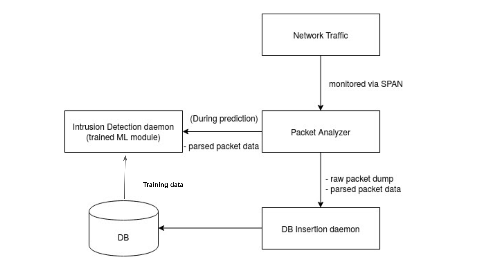

Sahiti Bommareddy Daniel Qian Parv Saxena
Project Overview
Critical Infrastructure like the SCADA system for the power grid should be resilient to both network and system-level attacks. The current project is built on top of existing open-source software Spire. It involves three exploration tracks:
Optimizing update transaction time:
With the setting of f=1,k=1 and N=3f+2k+1 in the single site configuration, each update transaction was bencmarked to have an average time of around 43ms. An initial attempt at using updated Openssl libraries decreased the average to 36ms. In the next stage spires code needs to be refactored to be compatable with futher optimized ssl libraries
Network Intrusion Detection Component:
General approach is to use network traffic of spires and ML Algorithms to detect network intrusion/attacks.

Attack Vectors:
Build the general attacks SCADA systems are subject to. Using these vectors test the intrusion detection component.
References : http://www.dsn.jhu.edu/spire/